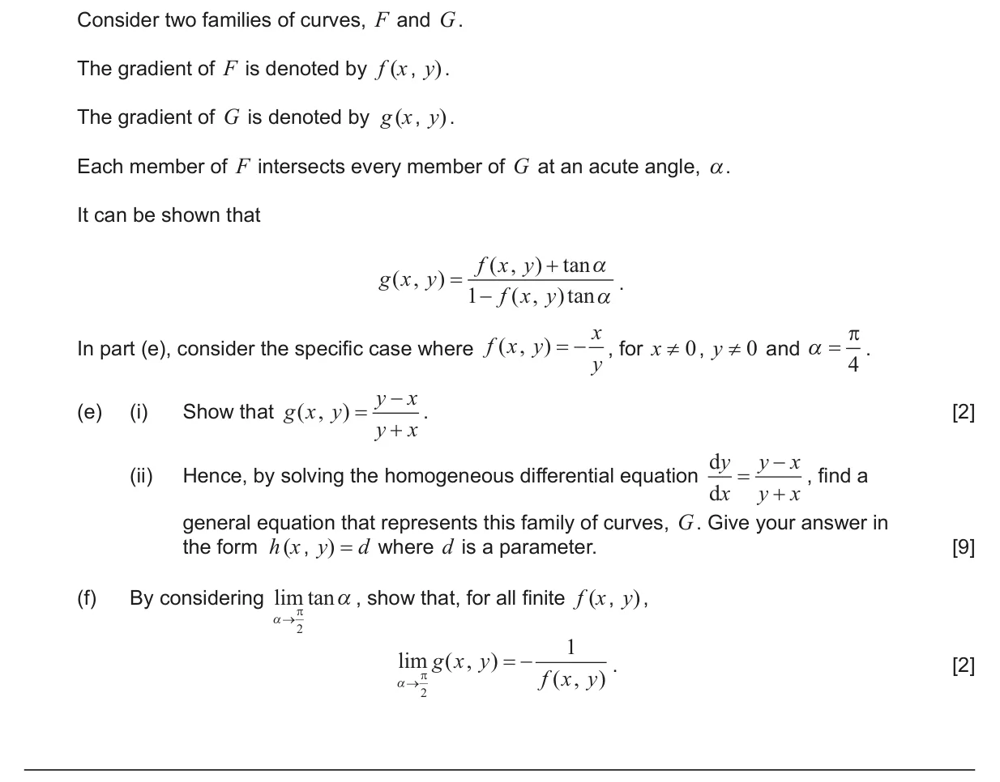
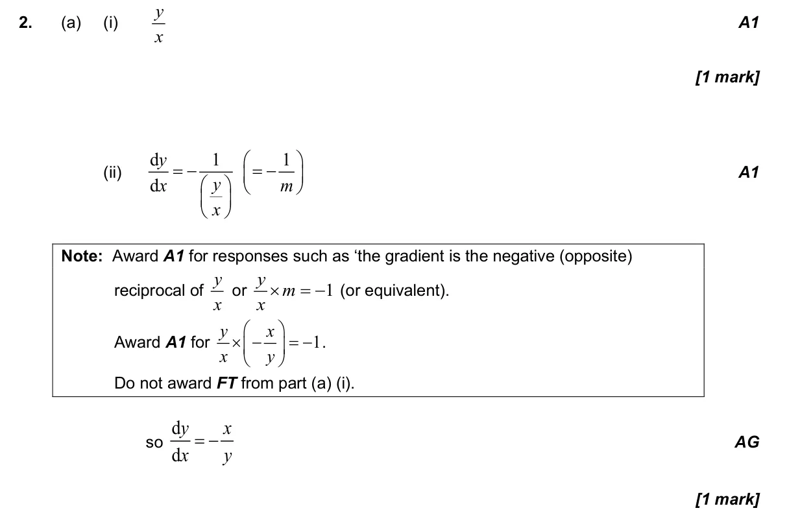
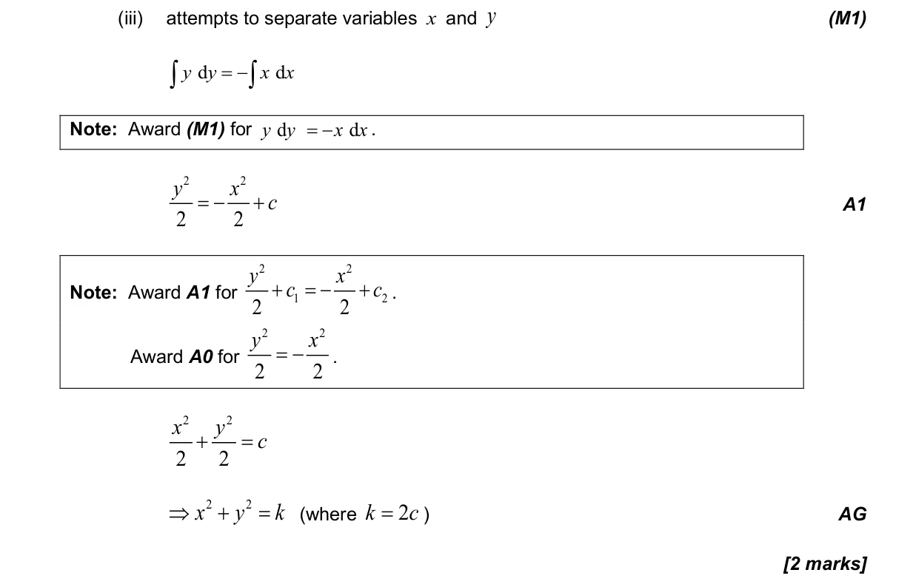
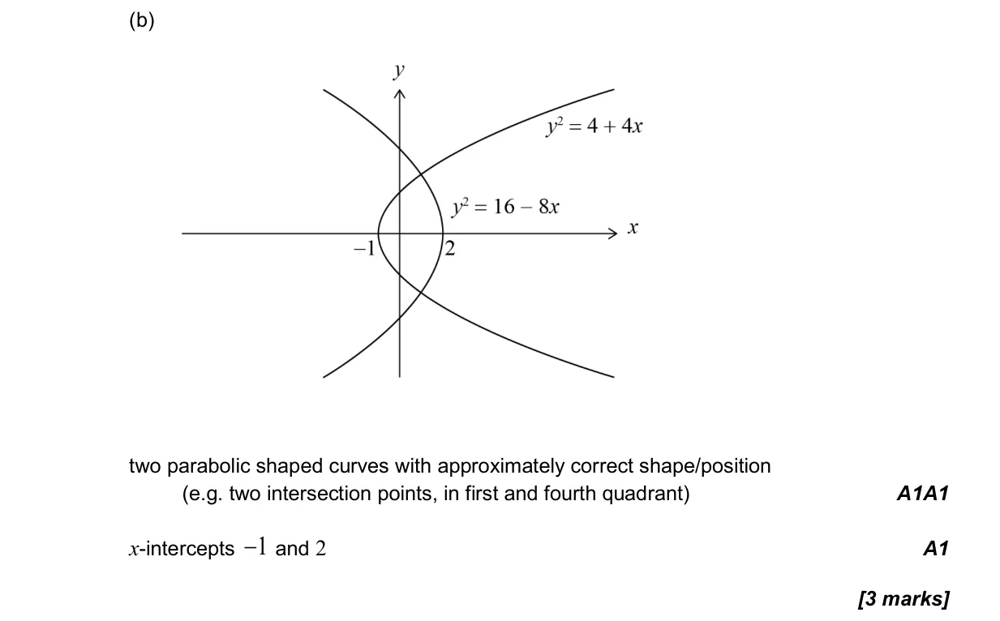
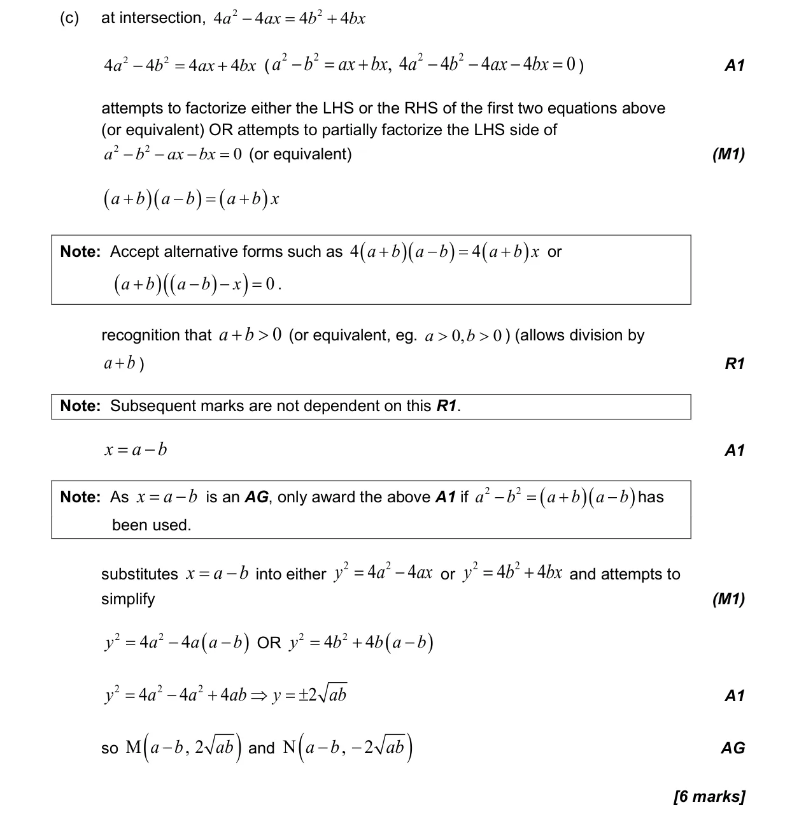
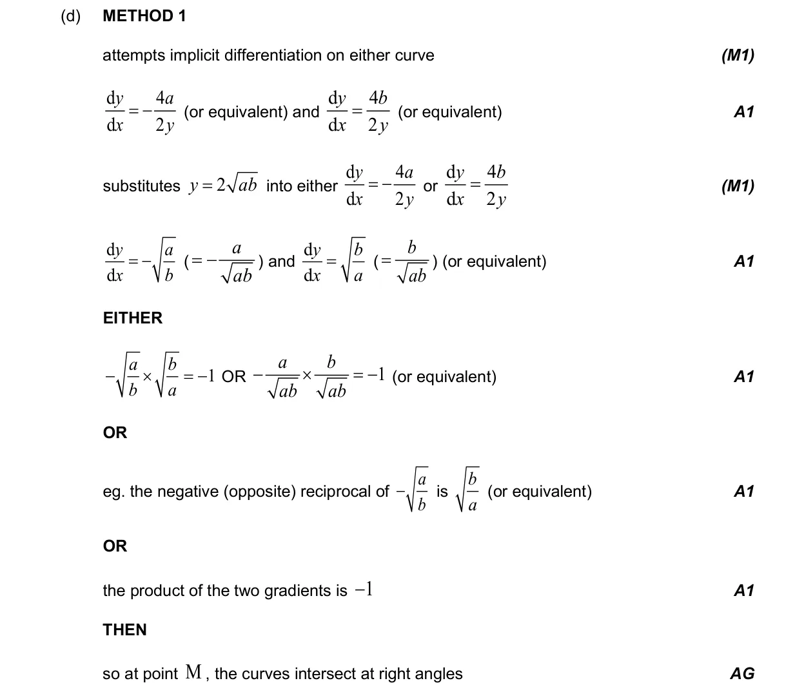
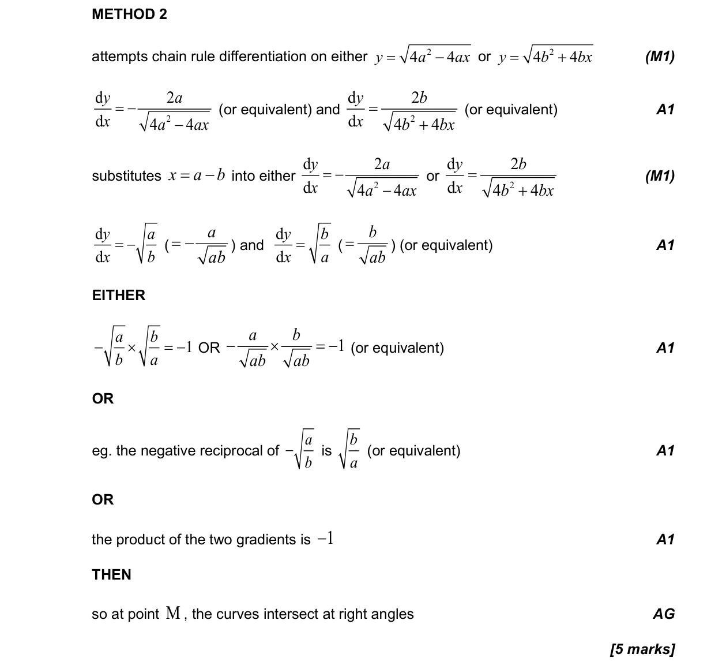
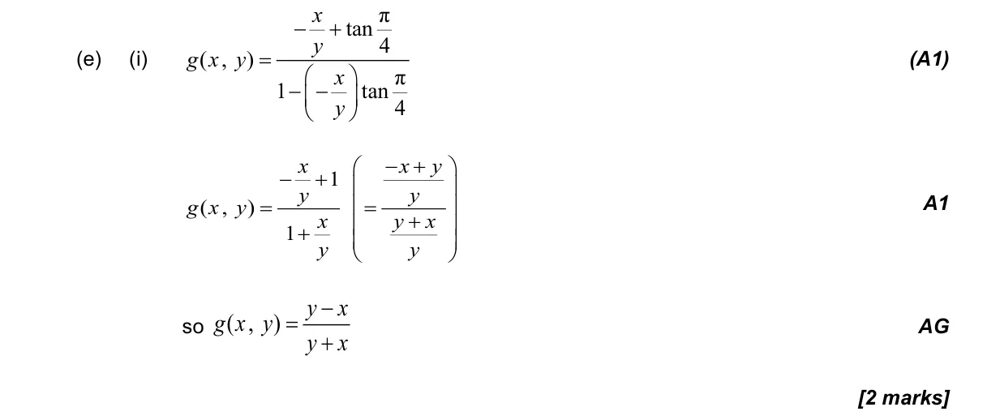
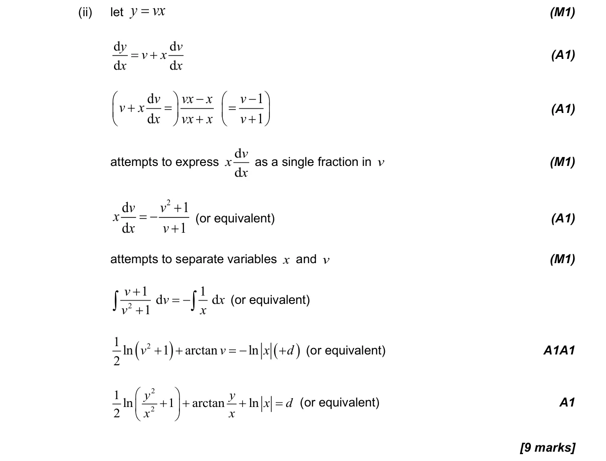
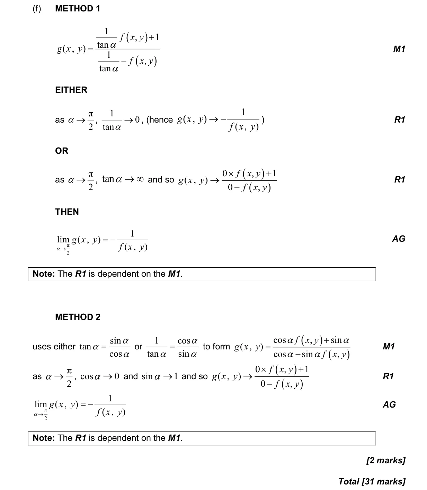

5.18 First-order differential equations2.10 Solving equations graphically and analytically2.1 Equations of straight lines, parallel and perpendicular5.15 Further standard derivatives and integrals2.3 Graphs of functions5.14 Implicit differentiation, related rates of change and optimisation3.5 Unit circle definitions, exact trig ratios and ambiguous case of sine rule5.12 Continuity, differentiability, limits and differentiation from first principles
Question


Markscheme








